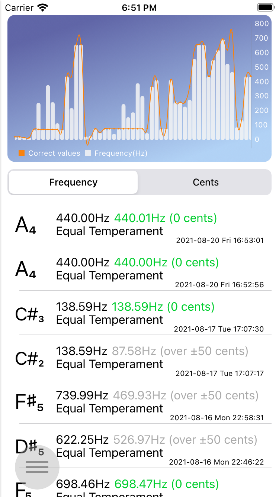
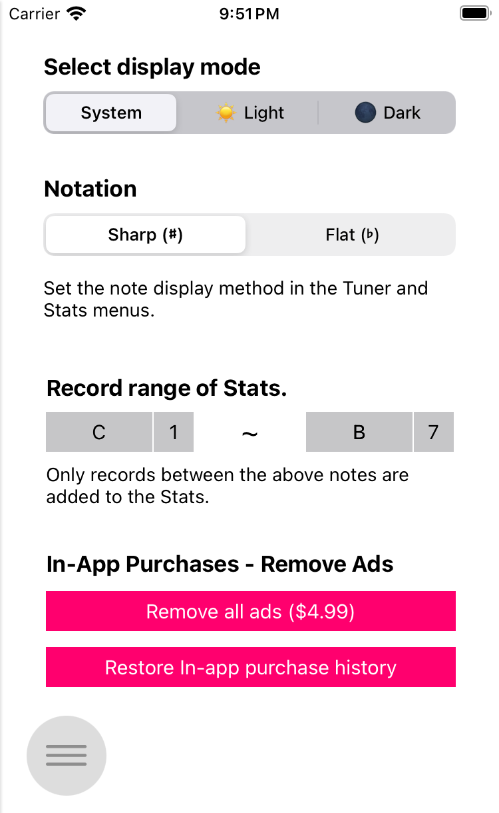

Tuner XR
Tuner XR (Tuner with eXtRa features) is an application for musicians who play vocals, instruments, and more. Tuner XR offers the following features:
- Tuning specific notes for equal temperament and just (pure) intonation.
- You can tune based on various frequencies rather than a fixed frequency.
- Frequency (pitch) table at which notes can be sounded.
- Stats to record and view your tuning results.
There are other convenient features as well.
- Universal design for all models of iPad, iPhone and iPod touch (7th generation).
- Synchronize the tuning record results between my Apple devices through iCloud.
- Dark mode support.
How to use
- You can open the menu by swiping the screen from the left edge, or by clicking the circle button in the lower left corner of any screen.
Tuner

- First, since this tuner tunes notes through a microphone, play a specific note of an instrument or vocal at sufficient volume in a quiet environment. Measurement results may be inaccurate if there is a strong ambient noise.
- In the top panel you can set the reference tuning system, frequency (pitch), etc.
- You can set the reference note and frequency in the top button and text field. The example above is set to A4 = 440Hz. As another example, if you want to use baroque tuning, you can set A4 = 415Hz.
- The left button sets the tuning system. You can choose equal temperament or just intonation.
- The right button allows you to set the standard major scale when the tuning system is selected as the just intonation. For example, if you set C4 = 261.63Hz, just intonation and Scale C, the tuning results are provided based on C major.
- If you want to set the minor key in just intonation mode, select the relative key under the minor 3 key. If C is selected, it is also available in A minor.
- You can hide the panel by touching the leftmost arrow-shaped button.
- The indicator below gives the accuracy of the tuning result. When you play a note, it automatically detects the corresponding note, and you can check the tuning result up to +-50 cents at that note's standard frequency.
- If the needle is on the left, it is playing lower than the original pitch, if it is in the middle, it is playing at the correct pitch, and if it is on the right, it is playing higher than the original pitch.
- When tuning, if a specific note is played evenly for more than 4.5 seconds, the result of the tuning is recorded in the Stats menu. Record progress, failure, or success is displayed in the recording status window in the lower right corner.
Frequency Table (Pitch Table)

- By entering the frequency (Hz), tuning system, and scale (in the case of just intonation), the frequency of each note in the range of C1 ~ B7 is automatically calculated and displayed, and the corresponding note can be sounded.
- You can set the reference note and frequency in the top button and text field. The example above is set to A4 = 440Hz. As another example, if you want to use baroque tuning, you can set A4 = 415Hz.
- The left button sets the tuning system. You can choose equal temperament or just intonation.
- The right button allows you to set the standard major scale when the tuning system is selected as the just intonation. For example, if you set C4 = 261.63Hz, just intonation and Scale C, the table results are provided based on C major.
- If you want to set the minor key in just intonation mode, select the relative key under the minor 3 key. If C is selected, it is also available in A minor.
- You can hide the panel by touching the lowest arrow-shaped button.
- Click on each cell to play the corresponding frequency.
Stats

- If a specific note is played evenly for more than 4.5 seconds in the tuner menu, the result of that tuning is recorded in the Stats menu.
- The standard frequency (Hz) and the frequency of the actually played note, the difference between the two are displayed in cents.
- If you want to delete a specific record, swipe left on a specific cell to display the delete button. You can delete it by clicking the Delete button.
- If multiple devices are linked with an iCloud account, the records can be displayed in sync between each device.
- The last 50 records are displayed in the graph, and you can see the difference between the played frequency and the standard frequency. If it is based on frequency, it is displayed as a frequency reference, and if it is based on cents, you can see how much the difference from the standard frequency is within the range of -50 cents to 50 cents based on 0 cents.
- You can specify the range of the recording destination in the settings menu. Notes outside that range are not recorded.
Settings

- Select display mode: Select the display mode to be displayed in the app. For 'System', the default settings of the OS are followed, and light and dark modes are displayed in light or dark mode regardless of whether the OS is set or not.
- Notation: Determines whether semitones are displayed as sharp (#) or flat (b) in the tuner, stats menu.
- Stats recording range: If set, only notes within the range in the tuner menu will be recorded in Stats.
Contact
We are receiving inquiries, suggestions, and bug reports related to this application. If you give us your opinion, we will actively reflect it.
BGSMM의 다른 앱 둘러보기
-

UltimateScale
UtimateScale is a music scale learning assistant that built-in synth keyboard supporting various keys, efficient learning through quizzes is possible
-

Make My MusicBox
Music Box is reborn on iPhone/iPad. Create your own music box and sheet music.
-

DiffuserStick
The DiffuserStick app is a diffuser stick replacement cycle management assistant app, which records the date the diffuser stick was inserted along with a picture of the diffuser, and notifies you through a push alarm when the replacement period is due.